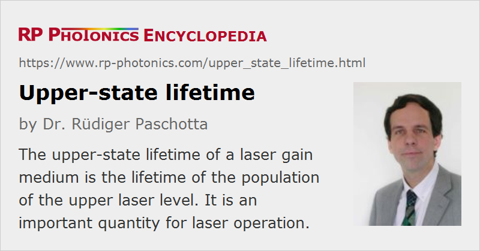

Upper-state Lifetime
Definition: the lifetime of the population of the upper laser level
Opposite term: lower-state lifetime
German: Lebensdauer des oberen Zustands
Category: physical foundations
How to cite the article; suggest additional literature
Author: Dr. Rüdiger Paschotta
In a laser gain medium, amplification is associated with the population of an excited state, from which stimulated emission can occur. Even without stimulated emission, the lifetime of this upper-level population is finite due to spontaneous emission and possibly due to additional quenching effects. Typically, the upper-state population decays exponentially with a certain decay time (the upper-state lifetime), assuming the absence of pumping and stimulated emission. More precisely, the decay time is the time after which this population has decayed to 1/e (≈ 37%) of the initial value.
Spontaneous emission leads to fluorescence, the lifetime of which (fluorescence lifetime) is of course identical to the upper-state lifetime.
Ideally, the decay of the upper-state population is caused only by the unavoidable spontaneous emission. Under these conditions, the inverse lifetime (then called radiative lifetime) is
This shows that the decay is fast for large laser cross sections and a large gain bandwidth.
The decay rate is enhanced if there are additional transitions to other lower-lying energy levels. In addition, the upper-state lifetime can be reduced by quenching processes, involving e.g. the deexcitation at impurities or crystal defects, or energy transfers between different laser ions. The decay of the upper-state population is then not necessarily of exponential nature; non-exponential decay is frequently observed (particularly for measurements with sufficiently short pump pulses). For example, some quenching processes lead to a fast decay, as long as the upper-level population is high, but have little influence on later stages of the decay.
For some gain media such as Cr:forsterite and Cr:YAG, the upper-state lifetime is strongly temperature-dependent. The reason can be phonon-assisted non-radiative relaxation, which becomes stronger at higher temperatures.
An effective upper-state lifetime can be defined under lasing conditions, which includes the effect of stimulated emission. For a four-level laser medium, the effective upper-state lifetime is reduced e.g. by a factor of 2 when the laser is pumped twice above the threshold pump power.
Note that the lower laser level can also have a finite lifetime, the so-called lower-state lifetime.
In the case of semiconductor devices (semiconductor optical amplifiers and lasers), the upper-state lifetime is usually called the carrier lifetime.
Typical Values
The upper-state lifetimes of different kinds of laser gain media differ considerably:
- Assuming the existence of dipole-allowed transitions, excited levels of atoms or ions typically have lifetimes of the order of nanoseconds.
- The lifetime of carriers in the conduction band of a direct band gap semiconductor (as used for semiconductor lasers) is also typically a few nanoseconds.
- Rare-earth-doped gain media typically operate on weakly allowed transitions, leading to much longer lifetimes between a few microseconds (e.g. for titanium–sapphire) and ≈ 8–10 milliseconds (e.g. for erbium-doped fiber amplifiers). Their upper laser levels are called metastable.
Note that the threshold powers for different gain media vary much less than the upper-state lifetimes do, since long upper-state lifetimes imply low emission cross sections, and the threshold power depends on the σ−τ product (see below).
Importance for Lasers
A long upper-state lifetime in a laser gain medium means that a significant population inversion can be maintained with a relatively low pump power. The gain efficiency and thus also the threshold pump power of a laser also depend on the emission cross section (apart from other factors); the threshold pump power is inversely proportional to the product of upper-state lifetime and emission cross section (called the σ−τ product), at least for four-level lasers.
The upper-state lifetime also influences the laser dynamics, e.g. the relaxation oscillations and the tendency for spiking.
A long upper-state lifetime is desirable for continuously pumped Q-switched lasers, because it makes it possible to store large amounts of energy.
Measurement of the Upper-state Lifetime
The upper-state lifetime can be measured e.g. by populating the upper laser level with a short laser pulse and monitoring the decay of the fluorescence. Alternatively, one may use an optical chopper (typically, with a rotation disc) in conjunction with a continuous-wave laser beam, but the switching is then much slower; it may still be sufficient for lifetimes of the order of milliseconds are hundreds of microseconds.
Note that in highly doped media the measured upper-state lifetime may be increased by reabsorption of the fluorescence, particularly if radiation trapping due to total internal reflection at the surfaces of the medium enhances this effect [1, 2]. Reabsorption effects can be suppressed by using a lightly doped powder of the substance immersed in a liquid with comparable refractive index, or by dominantly recording fluorescence from some edge of a sample, using a pinhole (pinhole method).
Note that the fluorescence decay becomes non-exponential in situations with significant reabsorption. Non-exponential decay can also result from various other conditions.
Questions and Comments from Users
Here you can submit questions and comments. As far as they get accepted by the author, they will appear above this paragraph together with the author’s answer. The author will decide on acceptance based on certain criteria. Essentially, the issue must be of sufficiently broad interest.
Please do not enter personal data here; we would otherwise delete it soon. (See also our privacy declaration.) If you wish to receive personal feedback or consultancy from the author, please contact him e.g. via e-mail.
By submitting the information, you give your consent to the potential publication of your inputs on our website according to our rules. (If you later retract your consent, we will delete those inputs.) As your inputs are first reviewed by the author, they may be published with some delay.
Bibliography
| [1] | D. S. Sumida and T. Y. Fan, “Effect of radiation trapping on fluorescence lifetime and emission cross section measurements in solid-state laser media”, Opt. Lett. 19 (17), 1343 (1994), doi:10.1364/OL.19.001343 |
| [2] | H. Kühn et al., “Model for the calculation of radiation trapping and description of the pinhole method”, Opt. Lett. 32 (13), 1908 (2007), doi:10.1364/OL.32.001908 |
| [3] | I. G. Kisialiou, “Free of reabsorption upper-state lifetime measurements by the method of transient gratings”, Appl. Opt. 51 (22), 5458 (2012), doi:10.1364/AO.51.005458 |
See also: spontaneous emission, quenching, metastable states, forbidden transitions, lower-state lifetime, lasers, The Photonics Spotlight 2011-03-13
and other articles in the category physical foundations
|  |
If you like this page, please share the link with your friends and colleagues, e.g. via social media:
These sharing buttons are implemented in a privacy-friendly way!